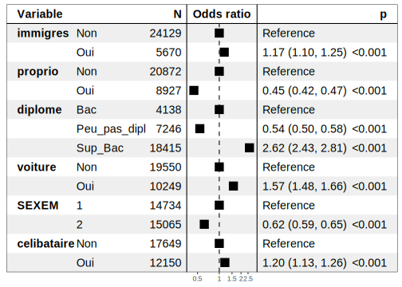
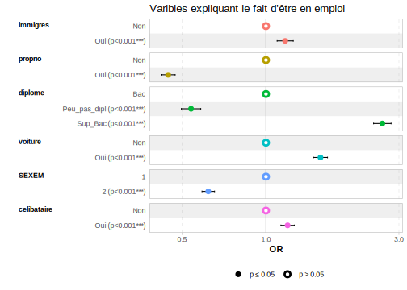
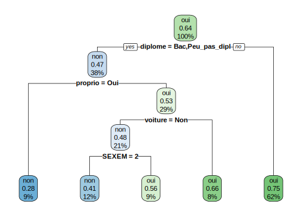
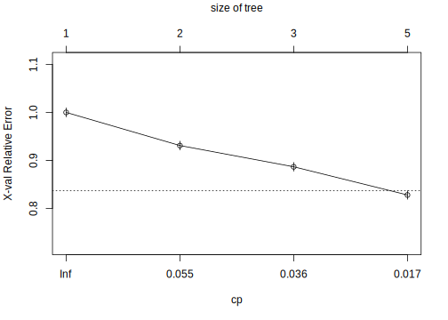

Section 12 Modèles de régression : application sur le RP 2019
On cherche maintenant à expliquer un phénomène ou une variable par rapport à d’autres. On va ici s’intéresser au fait d’être en emploi plutôt que de ne pas l’être (regroupant 2 situations : au chômage et inactif).
On va repartir de la base RP2019, mais comme elle porte sur les logements, pour être cohérent, on va utiliser les variables se rapportant à la personne de référence du ménage. Si ce n’est pas idéal (car le mieux aurait été d’utiliser plutôt la base des individus, ce qui aurait permis d’avoir davantage de variables individuelles), cela permet quand même de réaliser quelques modèles descriptifs et prédictifs.
12.1 La création des bases d’apprentissage et de test
On crée notre base de travail en ne prenant que les variables qui nous intéressent et le champ le plus pertinent pour cette analyse : on ne travaillera que sur Paris et le 12ème arrondissement et sur les logements en résidence principale (on supprime la modalité “Y” des variables).
RP_Paris <- RP %>%
filter(COMMUNE=="75056" & HLML!="Y" & DIPLM!="YY" & IMMIM !="Y"
& RECHM !="Y" & !AGEMEN8 %in% c("00", "YY") &
ARM == "75112") %>%
mutate(diplome=as.factor(case_when(DIPLM %in% c("01", "02", "03", "11", "12",
"13") ~ "Peu_pas_dipl",
DIPLM %in% c("14", "15") ~ "Bac",
DIPLM %in% c("16", "17", "18", "19") ~ "Sup_Bac")),
emploi=as.factor(case_when(RECHM %in% c( "Z") ~ "oui",
TRUE ~ "non")),
immigres=as.factor(case_when(IMMIM=="1" ~"Oui",
IMMIM=="2" ~ "Non")),
proprio=as.factor(case_when(STOCD == "10" ~ "Oui",
TRUE ~ "Non")),
voiture=as.factor(case_when(VOIT == "0" ~ "Non",
TRUE ~ "Oui")),
celibataire=as.factor(case_when(STAT_CONJM=="6" ~ "Oui",
TRUE ~ "Non"))) %>%
select(immigres, proprio, diplome, emploi, voiture, SEXEM, celibataire)On divise ensuite notre base de données en deux pour avoir un échantillon dit d’apprentissage ou d’entraînement, et un autre dit test.
On utilise pour cela la fonction sample (mais d’autres fonctions existent) en lui spécifiant la façon de diviser la base avec l’argument prob= : ici on choisit de diviser notre base selon un rapport 70% vs 30%, autrement dit notre base d’apprentissage comprendra 70% des données de la base initiale, alors que la base de test comprendra les 30% restants. On pourrait procéder à un rapport du type 80% vs 20%, ou 75% vs 25%, etc.
# On choisit la façon de diviser notre base et on l'applique en créant 2 bases
sample <- sample(c(TRUE, FALSE), nrow(RP_Paris), replace=TRUE, prob=c(0.70,0.3))
RP_Paris_train <- RP_Paris[sample, ]
RP_Paris_test <- RP_Paris[!sample, ]
# On regarde quelle est la taille de nos deux bases
dim(RP_Paris_train)[1] 20818 7dim(RP_Paris_test)[1] 8981 7# On vérifie que les proportions de notre variable d'intérêt est assez
# proche entre les deux bases
RP_Paris_train %>% tabyl(emploi) %>% adorn_pct_formatting() %>%
adorn_totals("row") %>% gt()| emploi | n | percent |
|---|---|---|
| non | 7384 | 35.5% |
| oui | 13434 | 64.5% |
| Total | 20818 | - |
RP_Paris_test %>% tabyl(emploi) %>% adorn_pct_formatting() %>%
adorn_totals("row") %>% gt()| emploi | n | percent |
|---|---|---|
| non | 3188 | 35.5% |
| oui | 5793 | 64.5% |
| Total | 8981 | - |
Les deux bases présentent une répartition emploi/non emploi très proche donc pas de biais par rapport à cela.
12.2 Un modèle à visée principale descriptive/explicative : la régression logistique
La fonction glm du package stats (à installer avant appel dans la librarie) est principalement utilisée pour modéliser différents types de régression : l’argument family=binomial("logit") permet d’utiliser un modèle logit.
# install.packages("stats")
library(stats)12.2.1 Le modèle initial
On crée le modèle en spécifiant la variable d’intérêt puis les variables explicatives ou l’ensemble des variables présentes dans la base si nous avons déjà procédé à une sélection des variables : c’est le cas ici donc c’est pour cela que l’on indique juste un “.” après le “~”, sinon on devrait écrire les variables une par une, ou les sctoker dans une liste et appeler la liste.
logit_1 <- glm (emploi ~ ., data=RP_Paris_train, family = binomial("logit"))
summary(logit_1)
Call:
glm(formula = emploi ~ ., family = binomial("logit"), data = RP_Paris_train)
Deviance Residuals:
Min 1Q Median 3Q Max
-2.1533 -1.0508 0.6647 0.8707 1.8215
Coefficients:
Estimate Std. Error z value Pr(>|z|)
(Intercept) 0.46101 0.04923 9.364 < 2e-16 ***
immigresOui 0.19282 0.04073 4.734 2.20e-06 ***
proprioOui -0.78629 0.03530 -22.276 < 2e-16 ***
diplomePeu_pas_dipl -0.64759 0.04912 -13.184 < 2e-16 ***
diplomeSup_Bac 0.93661 0.04431 21.136 < 2e-16 ***
voitureOui 0.46097 0.03547 12.996 < 2e-16 ***
SEXEM2 -0.47491 0.03162 -15.017 < 2e-16 ***
celibataireOui 0.16332 0.03373 4.841 1.29e-06 ***
---
Signif. codes: 0 '***' 0.001 '**' 0.01 '*' 0.05 '.' 0.1 ' ' 1
(Dispersion parameter for binomial family taken to be 1)
Null deviance: 27101 on 20817 degrees of freedom
Residual deviance: 24239 on 20810 degrees of freedom
AIC: 24255
Number of Fisher Scoring iterations: 4Toutes les variables sont significatives.
Même si ce modèle doit permettre essentiellement d’expliquer un phénomène, ici être en emploi par rapport à ne pas l’être (soit au chômage, soit inactif), on peut l’utiliser aussi pour prédire les données. C’est pour quoi nous avons d’abord appliqué le logit sur la base (réduite) d’apprentissage.
On va donc l’appliquer maintenant à la base test, en créant des indicateurs mesurant le taux de prédiction ou au contraire d’erreur.
Le modèle predict permet d’abord d’abord de calculer la probabilité d’être en emploi pour chaque individu, l’argument type="response" permettant d’appliquer le modèle logistique. Il est plus intéressant d’avoir la probabilité d’une variable de type qualitative, “oui”/“non” comme la variable d’intérêt du modèle, il faut donc procéder à une transformation aboutissant à une nouvelle variable. Enfin, on crée une matrice de confusion qui est en réalité un tableau croisé entre les valeurs observées et les prédicitions du modèle ; et on calcule un taux d’erreur en rapportant la somme des éléments hors diagonale principale à la somme des observations totales (de la matrice donc).
# Modèle de prédiction pour récupérer les probabilités individuelles d'être en emploi
pred.proba <- predict(logit_1, newdata = RP_Paris_test, type="response")
# On transforme les probas en variable qualitative
pred.moda <- factor(case_when(pred.proba>0.5 ~ "oui",
TRUE ~ "non"))
# On crée la matrice de confusion
matrice_conf <- table(RP_Paris_test$emploi, pred.moda)
matrice_conf pred.moda
non oui
non 1274 1914
oui 785 5008# On calcule le taux d'erreur
tx_erreur <- (matrice_conf[2,1]+matrice_conf[1,2])/sum(matrice_conf)
tx_erreur * 100[1] 30.05233On voit que parmi la modalité observée “non” de la base de données, le modèle prédit en réalité plus de “oui” que de “non”, donc il prédit assez mal ici cette modalité ; en revanche, la prédiction est meilleure si on regarde la modalité “oui”, puisque la majorité des prédictions se retrouvent bien en “oui”. Le taux d’erreur de 30% montre bien que le modèle ne prédit pas hyper bien.
12.2.2 L’évaluation du modèle et la recherche éventuelle d’un “meilleur” modèle
On peut améliorer le modèle en recherchant celui qui est le “meilleur” en faisant une sélection sur les variables, plus précisément en demandant au modèle de choisir les variables les plus explicatives, car peut-être que certaines ne sont pas nécessaires à l’explication du modèle (dans notre cas, nous avons néanmoins vu que toutes les variables étaient significatives donc probablement nécessaires). Pour une sélection “pas à pas”, il faut utiliser le package MASS et la fonction stepAIC car c’est à travers le critère AIC (“Akaike Information Criterion”, plus il sera faible, meilleur sera le modèle) que le modèle va chercher à être “meilleur”. On va d’abord faire cette sélection de façon “descendante” c’est-à-dire en partant du modèle initial “logit_1” ici : on part du modèle avec l’ensemble des variables et on en supprime une au fur et à mesure pour voir si le modèle est “meilleur”.
# install.packages("MASS)
library(MASS)
logit_backward <- stepAIC(logit_1,
scope=list(lower="emploi ~ 1",
upper="emploi ~ immigres + proprio + diplome +
voiture + SEXEM + celibataire"),
direction="backward")Start: AIC=24255.39
emploi ~ immigres + proprio + diplome + voiture + SEXEM + celibataire
Df Deviance AIC
<none> 24239 24255
- immigres 1 24262 24276
- celibataire 1 24263 24277
- voiture 1 24411 24425
- SEXEM 1 24467 24481
- proprio 1 24742 24756
- diplome 2 26238 26250logit_backward
Call: glm(formula = emploi ~ immigres + proprio + diplome + voiture +
SEXEM + celibataire, family = binomial("logit"), data = RP_Paris_train)
Coefficients:
(Intercept) immigresOui proprioOui
0.4610 0.1928 -0.7863
diplomePeu_pas_dipl diplomeSup_Bac voitureOui
-0.6476 0.9366 0.4610
SEXEM2 celibataireOui
-0.4749 0.1633
Degrees of Freedom: 20817 Total (i.e. Null); 20810 Residual
Null Deviance: 27100
Residual Deviance: 24240 AIC: 24260Le “meilleur” modèle semble bien être celui qu’on utilise avec l’ensemble des variables qu’on avait mis.
Pour une sélection des variables de façon “ascendante”, en partant d’un modèle sans variable puis on ajoute une à une les variables. On utilise la même fonction mais en changeant les paramètres et en créant un modèle “vide” avant :
logit_0 <- glm(emploi ~1, data=RP_Paris_train, family=binomial("logit"))
logit_forward <- stepAIC(logit_0,
scope=list(lower="emploi ~ 1",
upper="emploi ~ immigres + proprio + diplome +
voiture + SEXEM + celibataire"),
direction="forward")Start: AIC=27078.04
emploi ~ 1
Df Deviance AIC
+ diplome 2 25049 25055
+ SEXEM 1 26753 26757
+ proprio 1 26786 26790
+ voiture 1 26937 26941
+ celibataire 1 27008 27012
<none> 27076 27078
+ immigres 1 27075 27079
Step: AIC=25054.83
emploi ~ diplome
Df Deviance AIC
+ proprio 1 24541 24549
+ SEXEM 1 24751 24759
+ voiture 1 24958 24966
+ immigres 1 25016 25024
+ celibataire 1 25028 25036
<none> 25049 25055
Step: AIC=24549.44
emploi ~ diplome + proprio
Df Deviance AIC
+ SEXEM 1 24246 24256
+ voiture 1 24343 24353
+ immigres 1 24533 24543
<none> 24541 24549
+ celibataire 1 24541 24551
Step: AIC=24255.6
emploi ~ diplome + proprio + SEXEM
Df Deviance AIC
+ voiture 1 24104 24116
+ celibataire 1 24239 24251
+ immigres 1 24241 24253
<none> 24246 24256
Step: AIC=24116.32
emploi ~ diplome + proprio + SEXEM + voiture
Df Deviance AIC
+ celibataire 1 24073 24087
+ immigres 1 24098 24112
<none> 24104 24116
Step: AIC=24086.7
emploi ~ diplome + proprio + SEXEM + voiture + celibataire
Df Deviance AIC
+ immigres 1 24064 24080
<none> 24073 24087
Step: AIC=24080.02
emploi ~ diplome + proprio + SEXEM + voiture + celibataire +
immigreslogit_forward
Call: glm(formula = emploi ~ diplome + proprio + SEXEM + voiture +
celibataire + immigres, family = binomial("logit"), data = RP_Paris_train)
Coefficients:
(Intercept) diplomePeu_pas_dipl diplomeSup_Bac
0.4806 -0.6722 0.9532
proprioOui SEXEM2 voitureOui
-0.8053 -0.4966 0.4588
celibataireOui immigresOui
0.1959 0.1200
Degrees of Freedom: 20817 Total (i.e. Null); 20810 Residual
Null Deviance: 27080
Residual Deviance: 24060 AIC: 24080Le taux d’AIC diminue à chaque variable ajoutée donc le meilleur modèle est bien celui avec l’ensemble des variables explicatives mises dans le modèle initial.
12.2.3 Le modèle final et l’interprétation des résultats
Finalement, on peut estimer notre modèle sur l’ensemble de la base et étudier plus précisément les résultats avec les odds-ratios par exemple pour commenter plus facilement les coefficients.
logit_VF <- glm (emploi ~ ., data=RP_Paris, family = binomial("logit"))
summary(logit_VF)
Call:
glm(formula = emploi ~ ., family = binomial("logit"), data = RP_Paris)
Deviance Residuals:
Min 1Q Median 3Q Max
-2.1496 -1.0521 0.6583 0.8656 1.8216
Coefficients:
Estimate Std. Error z value Pr(>|z|)
(Intercept) 0.45772 0.04106 11.146 < 2e-16 ***
immigresOui 0.15838 0.03400 4.658 3.19e-06 ***
proprioOui -0.80891 0.02950 -27.419 < 2e-16 ***
diplomePeu_pas_dipl -0.61950 0.04090 -15.145 < 2e-16 ***
diplomeSup_Bac 0.96143 0.03696 26.014 < 2e-16 ***
voitureOui 0.44997 0.02966 15.171 < 2e-16 ***
SEXEM2 -0.47726 0.02645 -18.043 < 2e-16 ***
celibataireOui 0.17846 0.02819 6.331 2.44e-10 ***
---
Signif. codes: 0 '***' 0.001 '**' 0.01 '*' 0.05 '.' 0.1 ' ' 1
(Dispersion parameter for binomial family taken to be 1)
Null deviance: 38760 on 29798 degrees of freedom
Residual deviance: 34611 on 29791 degrees of freedom
AIC: 34627
Number of Fisher Scoring iterations: 4# Résumé des résultats sous forme de tableau avec les odds-ratio
# avec la librairie "questionr" d'abord
library(questionr)
odds.ratio(logit_VF)# A tibble: 8 x 4
OR `2.5 %` `97.5 %` p
<dbl> <dbl> <dbl> <dbl>
1 1.58 1.46 1.71 7.45e- 29
2 1.17 1.10 1.25 3.19e- 6
3 0.445 0.420 0.472 1.64e-165
4 0.538 0.497 0.583 8.19e- 52
5 2.62 2.43 2.81 3.41e-149
6 1.57 1.48 1.66 5.52e- 52
7 0.620 0.589 0.653 8.89e- 73
8 1.20 1.13 1.26 2.44e- 10# puis avec la librarie "forestmodel" pour avoir un meilleur rendu
#install.packages("forestmodel")
library(forestmodel)
forest_model(logit_VF)
# ou encore avec "gt_summary" pour avoir un meilleur rendu
library(gtsummary)
theme_gtsummary_language("fr", decimal.mark = ",", big.mark=" ")
logit_VF %>%
tbl_regression(exponentiate = TRUE) %>%
add_global_p(keep=TRUE) %>%
modify_header(label ~ "**Variable**") %>%
modify_caption("**Tableau de résultats. Variables expliquant le fait d'être en emploi**")| Variable | OR1 | 95% IC1 | p-valeur |
|---|---|---|---|
| immigres | <0,001 | ||
| Non | — | — | |
| Oui | 1,17 | 1,10 – 1,25 | <0,001 |
| proprio | <0,001 | ||
| Non | — | — | |
| Oui | 0,45 | 0,42 – 0,47 | <0,001 |
| diplome | <0,001 | ||
| Bac | — | — | |
| Peu_pas_dipl | 0,54 | 0,50 – 0,58 | <0,001 |
| Sup_Bac | 2,62 | 2,43 – 2,81 | <0,001 |
| voiture | <0,001 | ||
| Non | — | — | |
| Oui | 1,57 | 1,48 – 1,66 | <0,001 |
| SEXEM | <0,001 | ||
| 1 | — | — | |
| 2 | 0,62 | 0,59 – 0,65 | <0,001 |
| celibataire | <0,001 | ||
| Non | — | — | |
| Oui | 1,20 | 1,13 – 1,26 | <0,001 |
| 1 OR = rapport de cotes, IC = intervalle de confiance | |||
On privilégiera plutôt les deux derniers types de tableaux : ainsi, on note que le fait d’être immigré augmente de 1,17 fois (ou de 17%) la probabilité d’être en emploi, tandis qu’être propriétaire diminue de 55% (1-0,45 * 100) cette probabilité, probablement car c’est un proxy de l’âge puisqu’on trouve plus de propriétaires chez les retraités qui sont donc inactifs. Le diplôme joue un rôle important, comme attendu : par rapport à avoir le bac, être peu ou pas diplômé diminue la probabilité d’être en emploi, d’environ 46%, alors qu’avoir un diplôme supérieur au bac augmente cette même probabilité, elle la multiplie par 2,62. Ensuite, on observe qu’avoir une voiture augmente aussi la probabilité d’être en emploi, être célibataire également, tandis qu’être une femme diminue cette même probabilité.
On peut aussi vouloir visualiser ces résultats, on peut pour cela utiliser la librarie GGally et la fonction ggcoef_model().
# Résumé des résultats sous forme graphqiue
library(GGally)
ggcoef_model(logit_VF, exponentiate = TRUE) +
ggtitle("Varibles expliquant le fait d'être en emploi")  C’est peut-être le meilleur rendu…
12.3 Un modèle à visée principale prédictive : l’abre de décision
On va procéder à la même analyse en cherchant, cette fois, à prédire si un individu sera en emploi ou non à partir des variables sélectionnées précédemment.
On repart donc des deux tables créées et on va utiliser un modèle dit d’apprentissage supervisé, l’abre de décision. Sa construction repose sur un partitionnement récursif des observations qui se fait à partir de noeuds coupés, ces coupures pourront répondre à des règles et des conditions à spécifier ou faire varier pour avoir un meilleur modèle.
Ici on va utiliser un arbre de classification puisque notre variable est qualitative (binaire).
C’est le package rpart qui est spécialisé dans les modèles d’arbres de décision, à installer donc d’abord puis à appeler dans la librairie ; et rpart.plot permettra d’avoir un arbre plus esthétique et informatif.
# install.packages("rpart")
# install.packages("rpart.plot")
library(rpart)
library(rpart.plot)12.3.1 Le modèle initial
La spécification du modèle est assez simple, on précise la variable d’intérêt, les éventuelles variables explicatives ou toutes celles qui sont dans la table avec le . (comme précédemment pour le modèle logit), la base de données sur laquelle appliquer le modèle, et dans l’argument method= on spécifie le type de modèle, soit “class” pour une variable d’intérêt qualitative ou binaire, soit “anova” pour une variable d’intérêt quantitative ou continue.
On va d’abord appliquer le modèle sur notre échantillon d’apprentissage ou d’entraînement :
arbre_1 <- rpart(emploi ~ ., data=RP_Paris_train, method="class")
arbre_1n= 20818
node), split, n, loss, yval, (yprob)
* denotes terminal node
1) root 20818 7384 oui (0.3546931 0.6453069)
2) diplome=Bac,Peu_pas_dipl 7908 3662 non (0.5369246 0.4630754)
4) proprio=Oui 1934 552 non (0.7145812 0.2854188) *
5) proprio=Non 5974 2864 oui (0.4794108 0.5205892)
10) voiture=Non 4305 2019 non (0.5310105 0.4689895)
20) diplome=Peu_pas_dipl 2781 1152 non (0.5857605 0.4142395) *
21) diplome=Bac 1524 657 oui (0.4311024 0.5688976) *
11) voiture=Oui 1669 578 oui (0.3463152 0.6536848) *
3) diplome=Sup_Bac 12910 3138 oui (0.2430674 0.7569326) *Le modèle nous donne d’abord les résultats en format texte, ce sont des indications sur les différentes “noeuds” puis “branches” de l’arbre, etc. : “node” pour noeud et son numéro, “split” pour la condition de coupure/le critère de décision, “n” pour le nombre total d’observations dans un noeud, “loss” le nombre d’observations qui n’appartient pas à la modalité prédite, “yval” la modalité prédite (majoritaire en fait) pour les individus présents à l’étape du noeud, et “yprob” la proportion d’observations pour les individus présents à l’étape du noeud qui prend la valeur prédite en seconde position. Le petit astérix “*” précise que le noeud est une feuille (“terminal”).
Par exemple, ici le premier noeud indiqué “root” représente l’ensemble de l’échantillon (c’est la “racine” de l’arbre), soit 20818 observations, et il y a 64% d’observations qui auront la modalité “oui” (donc qui seront/seraient en emploi). La première variable discriminante est le diplôme : ceux ayant un bac ou étant peu ou pas diplômés (moins que le bac) forment une première branche avec un groupe qui n’est pas en emploi, alors que les diplômés supérieurs au bac forment l’autre branche et un groupe qui est en emploi. Etc.
On peut regarder quelles sont les variables les plus importantes dans le modèle par ordre :
arbre_1$variable.importance diplome proprio voiture SEXEM immigres
797.609746 173.660620 83.744043 46.758124 9.561252 Le diplôme est la variable la plus discriminante, comme on l’avait supposé puisque c’était la première variable qui divisait notre échantillon, ensuite vient le fait d’être propriétaire ou non (qui est en réalité ici une variable qui indique aussi l’âge car on a plus de probabilité d’être propriétaire une fois à la retraite, et donc d’être inactif), etc., et en tout dernier le fait d’être immigré ou non.
On va mieux étudier cela avec le résultat visuel.
Pour avoir ainsi graphiquement l’arbre, il faut appeler la fonction rpart.plot() du même package, l’argument “extra” permettant de préciser le type de modèle : “106” pour des modèles en classes avec une variable qualitative et binaire, “104” pour des modèles en classes mais avec une variable d’intérêt qualitative avec plus de 2 modalités, et “100” pour les autres modèles.
# On dessine l'arbre
rpart.plot(arbre_1, extra=106)
# ou avec la librarie `rattle`
#library(rattle)
#fancyRpartPlot(arbre_1)Au sommet de l’arbre on a donc la racine (qui est le 1er noeud), puis il se divise en 2 branches pour aboutir à deux autres noeuds, etc.
On voit donc que la branche partant sur la gauche, c’est le cas où la variable de diplôme est égale à la modalité “Bac” ou “Peu ou pas diplôme” car on voit le “yes” qui est encadré (et ça sera le cas à chaque fois même si ce n’est pas de nouveau inscrit), la modalité prédite est alors le “non” donc pas en emploi qui est constitué de 38% des individus du noeud précédent (donc de l’échantillon total) et les individus de ce groupe (=bacheliers ou peu/pas diplômés) ont une probabilité de 47% d’être dans la situation prédite c’est-à-dire en emploi. L’autre branche indique les individidus ou observations qui prennent toutes les autres modalités de la variable.
Tout en bas, se trouvent les feuilles de l’arbre, c’est lorsqu’il n’y a plus aucune branche qui part du noeud en question.
Ainsi, un individu qui aurait le bac ou un diplôme inférieur, ne serait pas propriétaire, n’aurait pas de voiture et serait une femme, il serait en emploi avec une probabilité de 41% et ce groupe constitue 12% de l’échantillon utilisé soit du total des observations.
12.3.2 L’évaluation du modèle
On peut vérifier la bonne (ou non) prédiction du modèle en l’appliquant sur l’échantillon dit test, puis en comparant les proportions prédites avec celles effectivement observées dans la base dans la matrice de confusion (construite de la même façon que précédemment), et enfin en calculant un taux de concordance ou au contraire un taux d’erreur à partir de cette une matrice de confusion :
# Modèle appliqué sur l'échantillon test
predict_test <- predict(arbre_1, RP_Paris_test, type="class")
# Comparaison des résultats - Matrice de confusion
mat_confusion <- table(RP_Paris_test$emploi, predict_test)
mat_confusion predict_test
non oui
non 1199 1968
oui 685 5129# Taux de concordance : rapport entre la somme des éléments
# de la diagonale principale et la somme des observations
# totales (soit de la matrice)
tx_concordance <- sum(diag(mat_confusion) / sum(mat_confusion))
tx_concordance * 100[1] 70.45986# Taux d'erreur
tx_erreur <- (mat_confusion[2,1] + mat_confusion[1, 2]) / sum(mat_confusion)
tx_erreur * 100[1] 29.54014On peut regarder aussi ce que cela donner sur la base d’apprentissage.
predict_train <- predict(arbre_1, RP_Paris_train, type="class")
mat_confusion_1 <- table(RP_Paris_train$emploi, predict_train)
mat_confusion_1 predict_train
non oui
non 2825 4580
oui 1551 11862tx_erreur_1 <- (mat_confusion_1[2,1] + mat_confusion_1[1, 2]) / sum(mat_confusion_1)
tx_erreur_1 * 100[1] 29.45048Dans les deux cas, les taux d’erreur sont assez élevés, d’environ 29%. Le modèle ne prédit pas hyper bien. On peut noter qu’on a pratiquement le même taux d’erreur que le modèle logit réalisé précédemment…
Vérifions si nous pouvons l’améliorer en modifiant les paramètres de construction de l’arbre, c’est-à-dire en jouant sur les conditions de coupure d’un noeud et sur les règles d’arrêt de ces coupures. On l’effectue avec la fonction rpart.control() avec les arguments suivants (règles d’arrêt principalement) : minsplit= donne le nombre minimum d’observations (individus) présentes à l’étape d’un noeud pour envisager une coupure ; minbucket= qui donne le nombre minimum d’observations/individus présentes à l’étape d’un noeud qu’engendrerait la coupure du noeud parent ; maxdepth qui donne la profondeur de l’arbre ; et cp= qui est un paramètre de complexité (plus il est petit, plus grand est l’abre de régression).
# Définition des règles de décision
ajust_param <- rpart.control(minsplit=50, minbucket = 50, maxdepth = 7, cp=0)
# Ajustement du modèle en indiquant le paramètre "control"
arbre_2 <- rpart(emploi~., data=RP_Paris_train, method="class",
control = ajust_param)
# On étudie de nouveau la matrice de confusion et
# le taux d'erreur associé au nouveau modèle
predict_train <- predict(arbre_2, RP_Paris_train, type="class")
mat_confusion_ajust <- table(RP_Paris_train$emploi, predict_train)
mat_confusion_ajust predict_train
non oui
non 2757 4627
oui 1334 12100tx_erreur_1 <- (mat_confusion_ajust[2,1] +
mat_confusion_ajust[1, 2]) / sum(mat_confusion_ajust)
tx_erreur_1 * 100[1] 28.63387Le taux d’erreur est un peu plus faible, mais la différence est très légère !
On cherche à minimiser l’erreur de prédicition de l’arbre afin de définir le niveau d’élagage optimal permettant ensuite de simplifier l’arbre.
# 2 fonctions liées à l'argument "cp=" de notre modèle
printcp(arbre_1)
Classification tree:
rpart(formula = emploi ~ ., data = RP_Paris_train, method = "class")
Variables actually used in tree construction:
[1] diplome proprio SEXEM voiture
Root node error: 7405/20818 = 0.3557
n= 20818
CP nsplit rel error xerror xstd
1 0.069007 0 1.00000 1.00000 0.0093278
2 0.044294 1 0.93099 0.93099 0.0091701
3 0.029372 2 0.88670 0.88670 0.0090541
4 0.010000 4 0.82795 0.82795 0.0088815plotcp(arbre_1)
Ici il faut donc indiquer la valeur 0.017 dans l’argument cp= pour minimiser l’erreur relative, c’est notre nouvelle règle d’arrêt. On va par conséquent reconstruire l’abre à partir de la fonction prune() en indiquant cette valeur optimale pour l’élaguer :
arbre_VF <- prune(arbre_1, cp=0.017)
rpart.plot(arbre_VF)Cela ne change en réalité rien ici !
Pour aller plus loin, on utilise maintenant beaucoup en analyse prédictive les forêts d’arbre de décision, qui constituent comme son nom l’indique, un ensemble d’arbres de régression, ce qui permet d’avoir un taux d’erreur global moindre, car la principale critique de l’arbre de décision est son potentiel d’erreur.